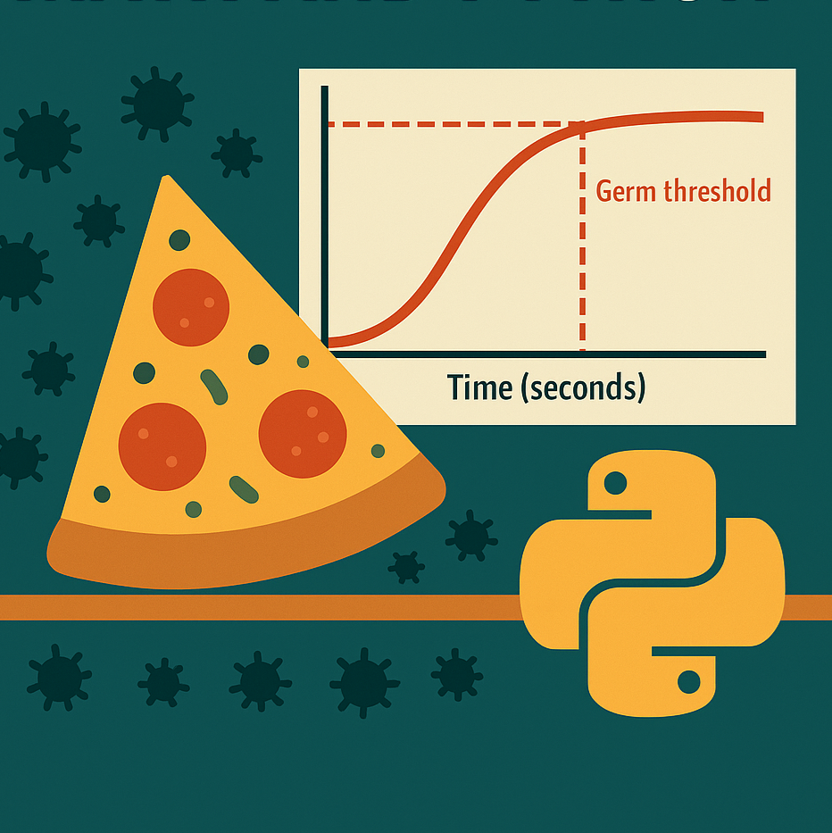
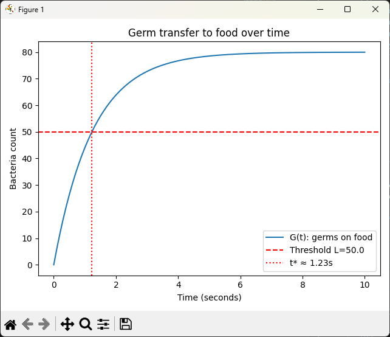

The Five-Second Rule Explored with Math & Python

You know the story: drop a cookie on the kitchen floor, swoop in before five seconds are up, and declare it safe. It is comforting. It is also wrong.
“Germs don’t wait five seconds. They start the party the instant your food hits the floor.”
The truth is much more interesting than the myth. Germs do transfer gradually, but they are especially fast at the beginning. That means if you want to know whether your floor-cookie is still edible, you need to think in curves, not in timers. And curves are something we can model.
Modeling the Problem
Think of the surface as a field of germs, like sprinkles on a donut. The density of those sprinkles is our germiness factor \(\rho\). When food touches the floor, it is like pressing a stamp down: the larger the contact area \(A\), the more germs are available to transfer.
But not every germ jumps instantly. That is where efficiency comes in. Some foods are more welcoming than others:
- Baseline stickiness \((\alpha)\): a generic “how likely are germs to move?”
- Moisture \((m)\): wetter foods transfer more.
- Surface roughness \((s)\): porous textures hold onto more.
Multiply these together and you get a number that tells you how hospitable your food is to germs.
Finally, germs do not arrive linearly. They rush in fast at first, then slow down as the easy-to-transfer germs make the jump. It is like pouring sand into a jar: the first handful drops in quickly, but as the jar fills, you have to shake and settle it to fit more. That tapering-off is what our rate constant \(\beta\) represents.
Turning Logic Into Math
All of this can be expressed as a function of time, \(t\), that tells us the expected number of germs on the food:
\[ G(t) = \rho \cdot A \cdot \alpha \cdot m \cdot s \cdot \bigl(1 - e^{-\beta t}\bigr) \]
This function starts at zero, rises quickly, and flattens toward a ceiling of \(\rho A \alpha m s\). That ceiling represents the maximum contamination possible in this setup.
As a bit of a math nerd, I love slipping calculus into problems like this. Defining the function is only half the fun. The real payoff comes from looking at how it changes second by second.
Why the First Second Matters
To see how fast germs are transferring at any moment, we look at the derivative:
\[ G’(t) = \rho \cdot A \cdot \alpha \cdot m \cdot s \cdot \beta \cdot e^{-\beta t} \]
- At \(t = 0\), the derivative is at its maximum: \(\rho A \alpha m s \beta\). This is the steep initial slope, meaning most germs transfer right away.
- As \(t \to \infty\), the derivative approaches zero. The curve flattens as the surface becomes saturated, and the rate of transfer slows down.
From the math, we know that the first second is the dirtiest, and waiting longer just gets you closer to the contamination ceiling.
Now that we have framed the problem logically and understand the math, let’s use AI to create a Python application that implements the mathematical model.
Using AI to Scaffold the Code
When prompting AI for this model, we do not just say “simulate germs.” For better results, spell out the assumptions.
Prompt example:
Write a Python function germs(t, rho, A, alpha, moisture, surface, beta) that calculates bacteria transfer over time. Use an exponential approach so germs arrive quickly at first, then taper off. Also write safe_time() that returns the time needed to reach a threshold L.
Python:
These functions are the backbone. The germs() function gives the germ count at any time. The safe_time() function for the time to cross a danger line.
def germs(
t: Number,
rho: float,
A: float,
p: TransferParams = TransferParams()
) -> float:
"""
Expected bacteria on food after t seconds.
G(t) = rho * A * p.k * (1 - exp(-p.beta * t))
"""
return (
rho * A * p.k
* (1 - math.exp(-p.beta * float(t)))
)
def safe_time(
L: float,
rho: float,
A: float,
p: TransferParams = TransferParams()
) -> float:
"""
Time until bacteria count first reaches threshold L.
Returns math.inf if L is above the asymptote.
"""
gmax = rho * A * p.k
if L >= gmax:
return math.inf
return -math.log(1 - L / gmax) / p.beta
Building Out Parameters
To keep things tidy, we can group efficiency factors into a TransferParams object. That way, you can tweak α, moisture, surface roughness, and β all in one place.
Prompt example:
Write a Python dataclass
TransferParamsthat holdsalpha,moisture,surface, andbeta. Add a property that returns their combined productk.
This makes experiments much cleaner: no messy parameter lists every time you call a function.
Python:
@dataclass
class TransferParams:
# Transfer efficiency components and approach rate
alpha: float = 0.5 # baseline stickiness
moisture: float = 0.8 # 0..1, wetter transfers more
surface: float = 0.5 # 0..1, rougher holds more
beta: float = 0.8 # per second, how quickly you approach
# the ceiling
@property
def k(self) -> float:
return self.alpha * self.moisture * self.surface
Simulation: Testing the Rule
Now let’s put it to work. Suppose the floor has 100 germs per cm², and your cookie touches 4 cm². That is 400 germs available. Not all will transfer, but plenty could.
We can call our functions at 1, 5, and 10 seconds and also ask: how long until the cookie hits 50 germs?
Prompt example:
Write a main() function that sets rho=100 and A=4. Call germs() at 1, 5, and 10 seconds and print the results. Also call safe_time() with L=50 and print the time. Finally call plot_results() to visualize.
Python:
def main():
# Scenario settings
rho = 100.0 # germs per cm^2 on the floor
A = 4.0 # cm^2 of food touching the floor
# tweak alpha, moisture, surface, beta as needed
p = TransferParams()
# Quick checks
for t in (1, 5, 10):
print(f"Germs after {t}s: {germs(t, rho, A, p):.2f}")
L = 50.0
t_star = safe_time(L, rho, A, p)
safe_msg = (
f"Safe time for L={L} germs: "
f"{'never' if math.isinf(t_star) else f'{t_star:.2f}s'}"
)
print(safe_msg)
Sample Output:
The output shows what intuition already suggests: germs arrive almost instantly, and your “five-second” window is really more like two or three seconds before contamination crosses a meaningful line.
Germs after 1s: 44.05
Germs after 5s: 78.53
Germs after 10s: 79.97
Safe time for L=50.0 germs: 1.23s
Making the Results Visual

A graph makes the story vivid. We sample times between 0 and 10 seconds, run them through germs(), and plot the results. For easier visual consumption, we add a dashed red line for the threshold L and a vertical dotted line for the crossing point.
Prompt example:
Write a plot_results() function that uses matplotlib to plot germs over time. Include an optional threshold line L and a vertical line at the crossing time.
Python:
The curve tells the tale: steep rise at the start, then flattening out as it nears the ceiling.
def plot_results(
rho: float,
A: float,
p: TransferParams = TransferParams(),
t_max: float = 10.0,
L: Optional[float] = None
) -> None:
import numpy as np
import matplotlib.pyplot as plt
times = np.linspace(0, t_max, 200)
values = [germs(t, rho, A, p) for t in times]
plt.plot(times, values, label="G(t): germs on food")
plt.xlabel("Time (seconds)")
plt.ylabel("Bacteria count")
plt.title("Germ transfer to food over time")
if L is not None:
plt.axhline(
L, color="red", linestyle="--", label=f"Threshold L={L}"
)
t_star = safe_time(L, rho, A, p)
if math.isfinite(t_star):
plt.axvline(
t_star,
color="red",
linestyle=":",
label=f"t* ≈ {t_star:.2f}s"
)
plt.legend()
plt.tight_layout()
plt.show()
What We Learned
- Germ transfer is immediate. There is no magical pause.
- The first second is the dirtiest, since the curve rises steeply at the start.
- After a few seconds, the food is already near its “germ ceiling.” Waiting longer adds little.
From the AI side, we saw how careful prompting matters. The clearer the assumptions, the better the generated scaffold. By wrapping parameters in a class and writing helper functions, we turned a fragile script into a reusable model.
Exercises for the Reader
Beginner Level: Quick Fixes and Calibration
- Dry vs. wet: Try toast (moisture=0.2) and watermelon (moisture=0.9).
- Clean vs. dirty: Compare a kitchen counter (ρ=10) vs. a bus floor (ρ=500).
- Pizza tragedy: Face-down slice with A=25 cm².
Intermediate Level: Geometry and Body Modeling
- Rolling grape: Irregular contact vs. flat stamp.
- Bread vs. chocolate: Rough surface vs. smooth.
- Variable β: Faster soak for soft foods.
Advanced Level: Environment and Stochasticity
- Random dirt: Use probability distributions for surface contamination.
- Climate effects: Let β vary with humidity.
- Monte Carlo: Run 1,000 drops and chart the spread.
Closing Thoughts
Next time you drop a cookie, don’t chant “five seconds” like a protective spell. Germs don’t wait for your permission. Transfer begins the instant food hits the floor.